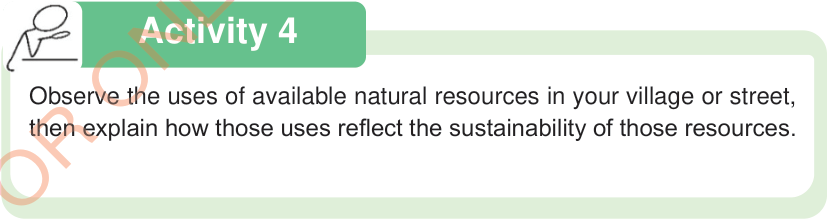

Activity 4
Observe the uses of available natural resources in your village or street, then explain how those uses reflect the sustainability of those resources.

Observe the uses of available natural resources in your village or street, then explain how those uses reflect the sustainability of those resources.